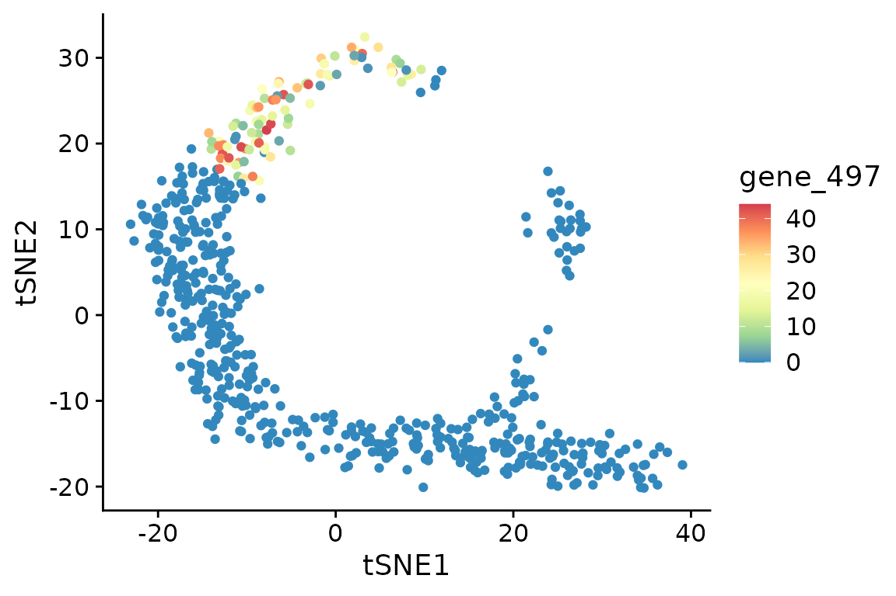
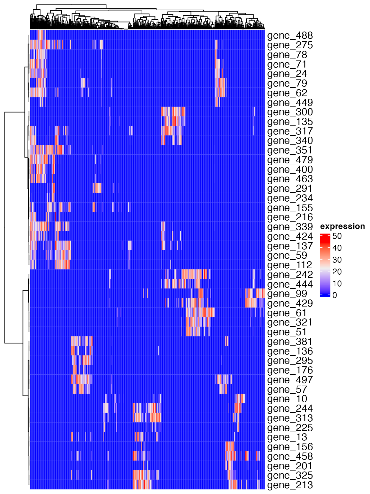
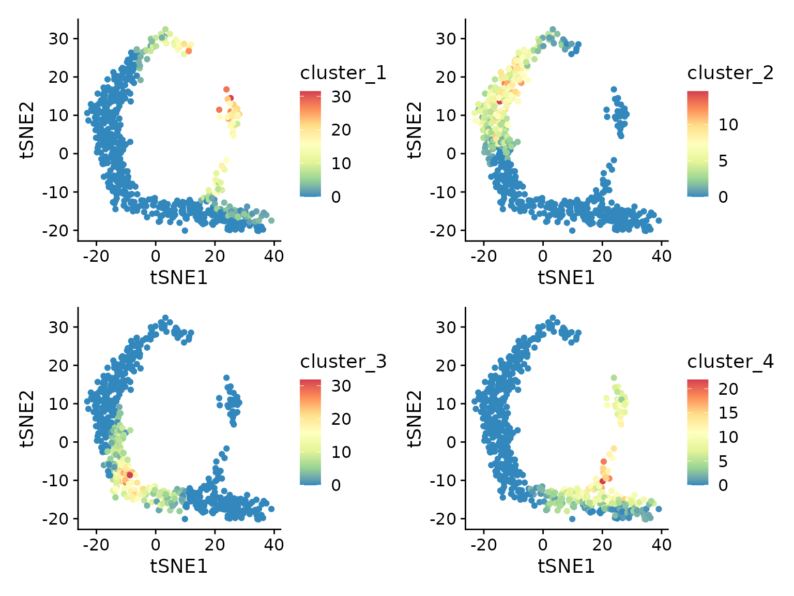

a01_toy_example.RmdA small toy dataset is included in the package. The toy dataset includes:
dat.expression: a toy scRNA-seq dataset with genes
(rows) and cells (columns)
dat.tsne: 2D coordinates of the cells in a t-SNE
splot
First, let’s apply haystack (the main function of the
package) on the toy dataset. This should take just several seconds on a
typical desktop computer.
library(singleCellHaystack)
set.seed(1234)
# run the main 'haystack' analysis
# inputs are:
# 1) the coordinates of the cells in the input space (here: dat.tsne)
# 2) the expression data (dat.expression)
res <- haystack(dat.tsne, dat.expression)
#> ### calling haystack_continuous_highD()...
#> ### Using package sparseMatrixStats to speed up statistics in sparse matrices.
#> ### Calculating row-wise mean and SD...
#> ### Filtered 0 genes with zero variance...
#> ### Using 100 randomizations...
#> ### Using 100 genes to randomize...
#> Warning in haystack_continuous_highD(x, expression = expression,
#> weights.advanced.Q = weights.advanced.Q, : The value of 'grid.points' appears to
#> be very high (> No. of cells / 10). You can set the number of grid points using
#> the 'grid.points' parameter.
#> ### scaling input data...
#> ### deciding grid points...
#> ### calculating Kullback-Leibler divergences...
#> ### performing randomizations...
#> ### estimating p-values...
#> ### picking model for mean D_KL...
#> ### using natural splines
#> ### best RMSD : 0.09
#> ### best df : 3
#> ### picking model for stdev D_KL...
#> ### using natural splines
#> ### best RMSD : 0.02
#> ### best df : 5
#> ### returning result...
# the returned results 'res' is of class 'haystack'
class(res)
#> [1] "haystack"Let’s have a look at the most significant differentially expressed genes (DEGs).
# show top 10 DEGs
show_result_haystack(res.haystack = res, n=10)
#> D_KL log.p.vals log.p.adj
#> gene_79 2.447641 -39.94871 -37.24974
#> gene_497 2.271242 -39.84546 -37.14649
#> gene_242 1.742783 -35.91184 -33.21287
#> gene_275 1.819669 -35.88741 -33.18844
#> gene_62 2.174074 -35.63854 -32.93957
#> gene_71 2.546493 -34.83522 -32.13625
#> gene_381 2.733446 -34.38544 -31.68647
#> gene_351 1.844673 -33.45724 -30.75827
#> gene_479 2.343509 -31.98940 -29.29043
#> gene_300 2.097546 -30.42637 -27.72740
# alternatively: use a p-value threshold
#show_result_haystack(res.haystack = res, p.value.threshold = 1e-10)One of the most significant DEGs is “gene_497”. Here we visualize its expression in the t-SNE plot. As you can see, this DEG is expressed only in cells in the upper-left corner of the plot.
d <- cbind(dat.tsne, t(dat.expression))
d[1:4, 1:4]
#> tSNE1 tSNE2 gene_1 gene_2
#> cell_1 -21.69304 11.599176 0 0
#> cell_2 -20.28140 10.808351 0 0
#> cell_3 -22.69715 8.643215 0 2
#> cell_4 -20.13836 12.485293 0 0
library(ggplot2)
ggplot(d, aes(tSNE1, tSNE2, color=gene_497)) +
geom_point() +
scale_color_distiller(palette="Spectral")
Yes, the coordinates of the cells in this toy example t-SNE space roughly resemble a haystack; see the Haystack paintings by Monet.
You are not limited to single genes. Here, we pick up a set of DEGs, and group them by their expression pattern in the plot into 5 clusters.
# get the top most significant genes, and cluster them by their distribution pattern in the 2D plot
sorted.table <- show_result_haystack(res.haystack = res, p.value.threshold = 1e-10)
gene.subset <- row.names(sorted.table)
# k-means clustering
#km <- kmeans_haystack(dat.tsne, dat.expression[gene.subset, ], grid.coordinates=res$info$grid.coordinates, k=5)
#km.clusters <- km$cluster
# alternatively: hierarchical clustering
hm <- hclust_haystack(dat.tsne, dat.expression[gene.subset, ], grid.coordinates=res$info$grid.coordinates)
#> ### collecting density data...… and visualize the pattern of the selected genes.
ComplexHeatmap::Heatmap(dat.expression[gene.subset, ], show_column_names=FALSE, cluster_rows=hm, name="expression")
We divide the genes into clusters with cutree.
Then calculate the average expression of the genes in each cluster.
for (cluster in unique(hm.clusters)) {
d[[paste0("cluster_", cluster)]] <- colMeans(dat.expression[names(which(hm.clusters == cluster)), ])
}
lapply(c("cluster_1", "cluster_2", "cluster_3", "cluster_4"), function(cluster) {
ggplot(d, aes(tSNE1, tSNE2, color=.data[[cluster]])) +
geom_point() +
scale_color_distiller(palette="Spectral")
}) |> patchwork::wrap_plots()
From this plot we can see that genes in each cluster are expressed in different subsets of cells.